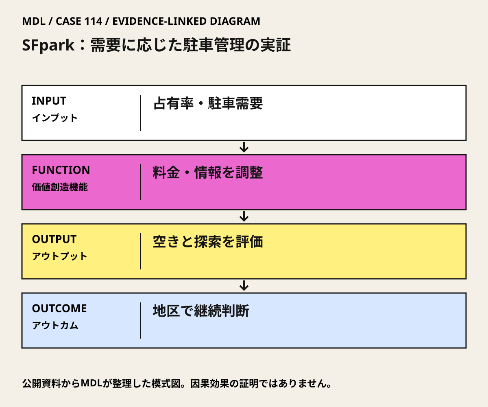

I / INPUT
何を持ち込んでいるか。
活動の出発点となる資源と課題を分けて整理します。「自社」は、その場・制度を運営する組織を指します。
- 他社・事業会社
決済、メーター、駐車情報等の技術が使われた。個別ベンダーの責任・契約額は本カードでは未確認。
公開資料では未確認出典 1- 行政・公共機関
SFMTAが駐車管理の複数施策を実証・評価し、連邦Urban Partnership Programが支援。
公開資料で確認出典 1- スタートアップ
特定スタートアップの実装支援事業としては確認していない。
公開資料では未確認- アカデミア
Pierce・Shoupが初年度の5,000件超の料金・占有率変化から需要反応を研究。市評価とは別の研究単位。
公開資料で確認出典 1- 市民・利用者・現場
駐車利用者や来街者がサービスの対象。全市民の便益・負担を代表する住民調査とは限らない。
MDLの分析出典 1
II / VALUE CREATION FUNCTIONS
資源を、どう価値へ変えるか。
以下は既存の8ステップへの編集上の対応づけです。各取り組みの公式な工程名や、全工程を自前で担うことを意味しません。
III / OUTPUT
直接、何が生まれたか。
試作品、データ、契約、標準、育成した人材など、活動から直接生まれたもの。
需要連動料金・情報・支払方法等の組合せを7地区で実証し、市評価と研究論文を公表。
IV / OUTCOME
その結果、何が変わったか。
実際の利用、行動、業務、事業、地域の変化。報告された変化と、当該活動に帰属できる効果は区別します。
実証地区の自己申告探索時間は前後で11分36秒→6分36秒（43%減）、比較地区は6分24秒→5分36秒（13%減）。43%は対照調整済み効果ではない。平均路上料金は実証地区で4%低下した。
目標占有率60–80%を満たす頻度の前後差は実証地区31%増、比較地区6%増と市が報告。料金単独の因果効果でも、Shoup個人の運営成果でもない。
PROJECT IN FOCUS / 具体的な事例
SFpark：需要に応じた駐車管理の実証
確認できた段階：駐車管理の政策実証・評価 調査確認日 2026-10-06
誰の課題を、どう扱ったか
確認できた変化
評価の限界：市評価には比較地区があるが、複数施策を同時に導入した非無作為の評価である。探索時間43%減は実証地区内の前後差で、比較地区の変化を差し引いた因果効果ではない。市全体の交通改善や、料金だけの効果に読み替えない。探索走行由来の排出削減は全交通の排出削減ではなく、収入地域還元など本人の全提案を一括検証した事例でもない。
DESIGN BACKWARDS FROM IMPLEMENTATION
社会実装から逆算して、
何を先に整えているか。
実証の先にある導入・運用・継続から、この事例の設計を読み解きます。原典で確認できる仕組みと、MDLの設計解釈・他地域へ応用するための提案を区別して読んでください。「提案」「未実施」と記す内容は、当地で実施済みの工夫ではありません。仕組みの存在と、全案件で成果が出たことも別に扱います。
MORE DETAIL / 運営・根拠・応用
運営の全体像と、学びを深める資料。
費用負担、公表値、応用条件、写真・動画、原典を続けて確認できます。
01どう動かしているのか。
満車と空き過ぎを避ける目標占有率を置き、場所・時間の需要に応じて料金を調整する。リアルタイム情報、案内、カード・電話決済、利用時間制限の変更も組み合わせ、実証地区と比較地区を評価した。
意思決定と本人の関与：確認した判断：SFMTAは2014年評価後、既存実証地区の需要連動料金を続け、拡張案を検討すると公表。学習上は料金収入最大化ではなく、空きと必要なアクセス、隣接地区への影響を基準に継続・修正を選ぶ。 Donald Shoupの研究をSFMTAが思想的基盤として明記。ShoupはPierceとの料金・占有率評価の共著者。実施責任者、単独設計者、正式な助言契約者だったとは確認していない。
- 空きを基準に需要を読む
- 料金と利用体験を同時に変える
- 比較地区を置いて評価する
- 観測から継続を判断する
02誰が負担し、誰が担うか。
米国運輸省Urban Partnership Programの連邦資金で実証を支援したと市が公表。駐車利用者は料金を支払う。資金の内訳・市側負担額は本カードでは未確認。
制度やプログラムの財源と、各参加企業・地域に発生する費用は同じではありません。公開範囲を超える案件別予算・契約条件は未確認です。
03確認できたこと。
需要連動料金・情報・支払方法等の組合せを7地区で実証し、市評価と研究論文を公表。
読み取れる範囲：市評価には比較地区があるが、複数施策を同時に導入した非無作為の評価である。探索時間43%減は実証地区内の前後差で、比較地区の変化を差し引いた因果効果ではない。市全体の交通改善や、料金だけの効果に読み替えない。探索走行由来の排出削減は全交通の排出削減ではなく、収入地域還元など本人の全提案を一括検証した事例でもない。
原典で確かめる ↗ 出典の説明 ↓04日本で活かすなら。
日本では値上げから始めず、満車の場所・時間と空きの偏りを測る。管理権限、荷さばき・送迎、車を使わざるを得ない人への配慮、料金変更の承認を先に確認する。
05そのまま真似できないこと。
市評価には比較地区があるが、複数施策を同時に導入した非無作為の評価である。探索時間43%減は実証地区内の前後差で、比較地区の変化を差し引いた因果効果ではない。市全体の交通改善や、料金だけの効果に読み替えない。探索走行由来の排出削減は全交通の排出削減ではなく、収入地域還元など本人の全提案を一括検証した事例でもない。
06次に、何を確かめるか。
提案・未実施：道路・駐車管理者を責任者に、商店・住民・障害当事者とまず2週間現状を観測し、90日以内に許可済みの小規模試行を判断。空き、探索時間、隣接街区への流出、送迎・荷さばき、運営費を指標に、現状維持、案内改善、時間帯料金、短時間枠の配分を比較。Continue＝必要なアクセスと空きが両立、Pivot＝住宅街流出や利用排除を修正、Stop＝安全と必要な通行を確保できない。
07写真・図と原資料で確かめる。
現場の写真を見る ↑
DIAGRAM: モビリティデザインラボ · 根拠資料 ↗
図の説明
公開資料に基づく模式図。占有率・駐車需要 → 料金・情報を調整 → 空きと探索を評価 → 地区で継続判断。実景や地理的配置を示さない。
2026-10-06 · MDL作成の説明図。第三者の写真・図面の複製ではありません。
冒頭写真：クレジットカード対応SFMTA駐車メーターの表示と決済口
原資料で、当時の調査・実践を読む ↗08原典を読む。
SFpark: Putting Theory Into Practice – Pilot Overview ↗
p.15にShoup研究を思想的基盤として明記
英語・SFMTA公式実証報告。公開PDFリンク。今回の直接取得は接続エラー
Getting the Prices Right: An Evaluation of Pricing Parking by Demand in San Francisco ↗
Pierce・Shoupの初期料金・占有率反応の原論文
英語・本人共著の査読原論文・本人公開PDF。公開PDFリンク。直接取得は失敗し、現在の全文接続は未確認
SFpark Evaluation Shows Parking Easier, Cheaper in Pilot Areas ↗
SFMTAの実施・資金・複数施策・比較評価・2014年継続判断
英語・SFMTA公式評価発表。本文公開（HTML）
SFpark: Pilot Project Evaluation Summary ↗
実証地区の自己申告探索時間11分36秒→6分36秒（43%減）、比較地区6分24秒→5分36秒（13%減）。43%は対照調整済み効果ではない
英語・実施主体の公式評価概要。全文PDF・無料（11 PDFページ、見開き）。